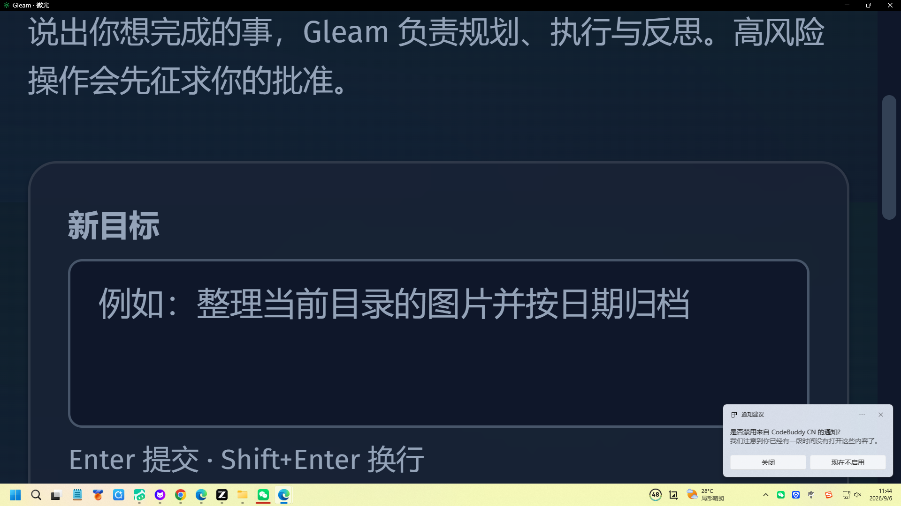
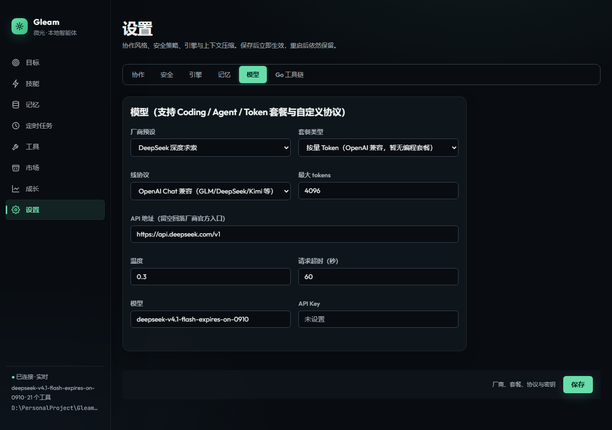
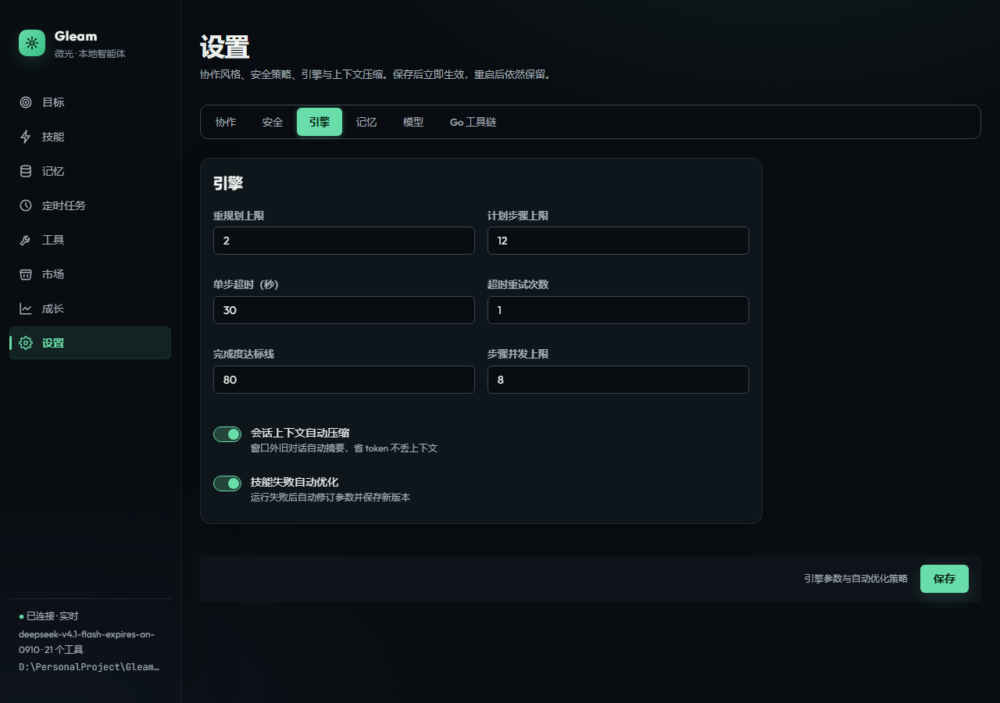

01
它真会干活
不是聊天框里回你一段话就完事了。你说"整理桌面"，它会列计划、执行、检查，做完了还主动告诉你"搞定了"。
深色玻璃拟态风格。对话、记忆与任务状态默认落本机；真实 LLM 仍走你配置的 API。




市面上 AI 工具已经够多了，为什么还要写 Gleam？
不是聊天框里回你一段话就完事了。你说"整理桌面"，它会列计划、执行、检查，做完了还主动告诉你"搞定了"。
不用注册账号。对话、记忆与任务状态默认存在你电脑上，不会把工作文件上传到我们的服务器。接入真实模型时才会向你配置的厂商 API 出网；Mock 演示可不联网。
整个程序就一个 exe（或二进制文件），双击就能跑。没有安装向导、没有依赖。
全部用 Go 标准库手写，零第三方依赖。
理解目标 → 拆解步骤 → 并行执行 → 自评打分。不达标自动重来，实在不行才认输。
文件读写、命令执行、网页抓取、剪贴板、截屏、通知……还能通过 MCP 协议热插拔外部工具。
短期记对话，中期记任务，长期记你的习惯偏好。记忆默认本地存储，自研词法索引。
删除文件、执行命令等危险操作默认需你确认。审批留痕，进程退出后下次打开还能续上。
常用操作流程保存为技能，一键复用。七个专家角色即场景模板，换场景不用改引擎。
Cron 表达式、固定间隔、文件变化监听。跑完结果直接送达系统通知，失败不静默。
每个任务用了多少次模型、多少 token、多少工具调用，实时可见。任务预算可设上限，超了自动停。
做完的任务、固化的技能、效率趋势，七个等级一路往上。连续活跃天数也给你数着。
CLI 命令行、Web UI 浏览器、JSON-RPC 编辑器插件。底层引擎独立，怎么接都行。
三层分离，引擎独立。
下面有三个场景，点"执行"看看 Gleam 是怎么干活的。
一个文件，下载就能跑。不用安装别的东西。
gleam-darwin-arm64chmod +x gleam-darwin-arm64 加运行权限xattr -d com.apple.quarantine ./gleam-darwin-arm64./gleam-darwin-arm64 appgleam-darwin-amd64chmod +x gleam-darwin-amd64 加运行权限xattr -d com.apple.quarantine ./gleam-darwin-amd64./gleam-darwin-amd64 appgleam-linux-amd64chmod +x gleam-linux-amd64 加运行权限./gleam-linux-amd64 app不确定你的 Mac 是 Intel 还是 Apple Silicon？左上角 Apple 菜单 → 关于本机，看芯片字段。
源码构建：git clone https://github.com/gleam-ai/Gleam 后运行 scripts/build-desktop.sh（macOS/Linux）或 scripts/install.ps1（Windows）
下载慢？文件托管在 GitHub Release，国内网络可能较慢。可尝试使用 ghfast.top 等加速工具，或从源码自行构建。
三步搞定。下面 Mock 步骤可不联网；接真实模型再配 API Key。
go build -trimpath -ldflags="-s -w" -o bin/gleam.exe ./cmd/gleam./bin/gleam.exe goal "整理当前目录的 Markdown 文件" --mock-llmexport GLEAM_API_KEY=你的APIKey
./bin/gleam.exe goal "列出当前目录的图片并按日期归档"./bin/gleam.exe webui # 浏览器打开 http://127.0.0.1:8787
./bin/gleam.exe serve # JSON-RPC stdio（编辑器插件入口）本地优先不等于离线大模型。
不是。对话、记忆、任务与审计默认留在本机；使用真实 LLM 时仍会请求你配置的 API。官网演示是 Mock 流程，可离线播放。详见仓库 已知限制。